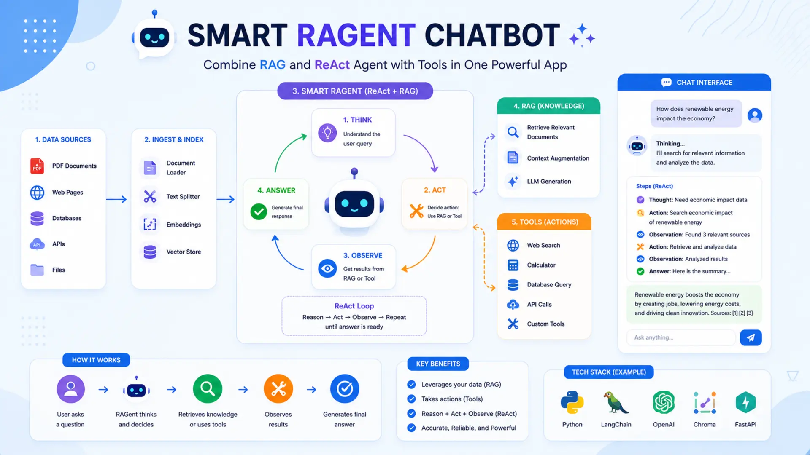
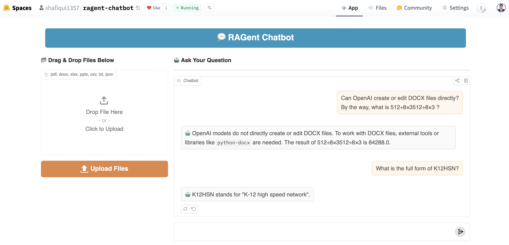
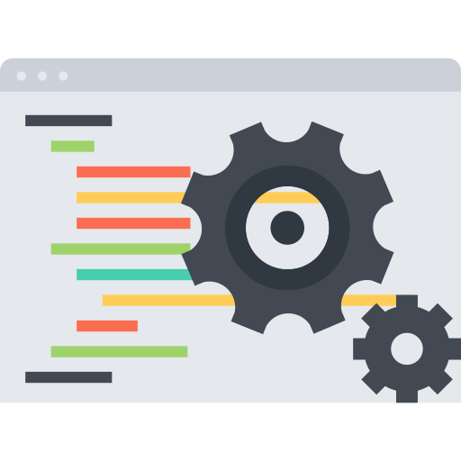
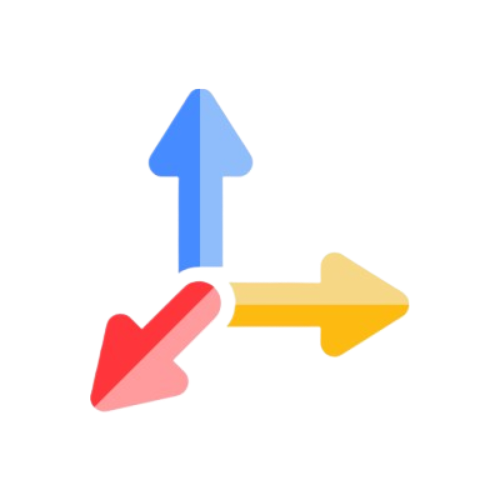

Build a Smart RAGent Chatbot: Combine RAG and ReAct Agent with Tools in One Powerful App

🤖 Building AI applications is no longer just for big tech giants. With the right tools and a bit of guidance, anyone can craft smart, useful systems that tackle real-world problems with ease. This blog post is a practical, hands-on guide to building one such system — a chatbot that blends document understanding with intelligent tool-based reasoning.
Meet RAGent, a smart assistant that brings together the power of Retrieval-Augmented Generation (RAG) and the ReAct Agent framework. But it's not just another chatbot. RAGent can read and answer questions from your uploaded documents — whether it's a PDF, Excel file, or Word doc — and if needed, it knows when to search the web, use a calculator, or check the weather to get the right answer.
🧠 Think of it as your intelligent co-pilot — one that knows when to read, when to think, and when to act.
If you're curious to see it in action, you can try the app live on Hugging Face Spaces. And if you want to dive into the code and build it yourself, everything is open-sourced on GitHub.
This guide will walk you through the process — not just how to build it, but how to make it smart, useful, and ready for real-world tasks. Let's get started! 🚀
📚 Table of Contents
- 📘 Introduction
- 📌 Project Overview
- 🗂️ RAGent Project Structure
- ⚙️ Setting Up the Environment
- 🧠 Implementing the LLM
- 📜 Understanding the Prompts
- 🔗 Building the RAG Pipeline
- 📦 Retrieval with Qdrant
- 🧭 Designing the ReAct Agent
- ReAct Loop: Thought → Action → Observation → Final Answer
- Prompt Format in Agent Prompt
- Agent Workflow
- 🛠️ Developing Custom Tools
- 🧵 Memory Management
- 💬 Gradio Web UI
- File Upload Interface
- Chat Logic Interface
- Tool Responses and Chat History
- Try Live RAGent App: GitHub & Hugging Face
- 🎯 Conclusion
📘 1. Introduction
Modern users expect more from AI chatbots. It's no longer enough to just generate clever text — they want assistants that understand uploaded files, fetch live information from the web, calculate results, and even explain complex topics — all in one smooth conversation.
This is exactly what RAGent delivers — a smart hybrid chatbot built by combining Retrieval-Augmented Generation (RAG) with the powerful reasoning flow of a ReAct Agent. In this blog post, we'll walk through how to build such a system from scratch and show you how it thinks, retrieves, and acts to serve intelligent answers.
🤖 What is RAGent Chatbot?
RAGent is a thinking assistant that goes far beyond static search. It allows users to upload files — such as PDFs, Excel sheets, Word documents, CSVs, and JSON — and ask natural language questions about the content. If the answer can't be found in the documents, it automatically knows how to switch gears: it can search the web, calculate math, check the weather, or even summarize using a general-purpose LLM.
The chatbot operates using a simple yet powerful loop:
Thought → Action → Observation → Final Answer
This loop makes it capable of step-by-step reasoning — much like how a human assistant would think through a task before responding.
🧠 Why Combine RAG and ReAct Agent?
RAG is perfect when the answer exists in a document. But when the answer isn't there — RAG can't help. Meanwhile, ReAct-style agents are great at using tools to reason and fetch live information, but they don't directly process user-uploaded files. When you combine both, magic happens.
RAGent intelligently chooses between:
- 📄 Reading and searching your uploaded documents
- 🌐 Searching the internet when documents fall short
- ➗ Performing real-time calculations
- 🌦️ Fetching up-to-date weather data
- 🧠 Using an LLM to summarize or explain information
All of this is done automatically — based on the question you ask — without you needing to specify the method. It's an elegant mix of retrieval, logic, and action that feels truly intelligent.
📌 2. Project Overview
Before jumping into the code, let's pause and explore what we're about to build. This section outlines the core capabilities of the RAGent Chatbot, the types of files it supports, and how the entire system flows from start to finish. Getting this big-picture view helps us appreciate how all the components work together like clockwork. 🕰️
🔑 Key Features
What makes RAGent special? It's not just another chatbot. Here's what sets it apart:
Understands Documents
Upload a file and ask anything — RAGent can summarize, extract insights, or fetch exact data from your documents.
Uses Tools When Needed
If the document doesn't contain the answer, it intelligently switches to tools like Web Search, Wikipedia, Weather, Calculator, or LLM-based helpers.
Thinks Step-by-Step
Follows a thoughtful reasoning loop: Thought → Action → Observation → Final Answer — for transparent, verifiable answers.
Powered by Gemini LLM
Uses Google's Gemini model to generate smart, fluent, and context-aware responses across all tasks.
Clean Web UI
Built using Gradio, so everything works seamlessly in the browser — upload files, chat, and see results instantly.
📂 Supported File Types
RAGent can work with a variety of document formats — so whether you're a researcher, a student, or a data analyst, uploading your files is quick and simple:
- 📄 PDF (.pdf)
- 📝 Word (.docx)
- 📊 Excel (.xlsx)
- 📈 PowerPoint (.pptx)
- 📎 CSV (.csv)
- 🧾 JSON (.json)
- 📃 Plain Text (.txt)
Once uploaded, the content is automatically chunked and embedded into a vector database, so it's searchable and context-aware during conversations.
🔄 Workflow Summary
Let's walk through how RAGent operates behind the scenes:
This hybrid pipeline ensures that no matter the query — whether it's document-based or external, you always get the best possible answer. 📈
🗂️ 3. RAGent Project Structure
To keep things clean, modular, and scalable, the RAGent Chatbot is carefully structured into folders and modules — each handling a specific part of the system. This section breaks down the project layout so you can see how everything fits together behind the scenes.
📁 High-Level Directory Overview
Here's a snapshot of the entire project structure:
Each folder and file plays a dedicated role. Let's explore them more closely.
📦 Purpose of Key Folders and Files
The RAGent project is structured to be clear, modular, and easy to maintain. Below is a detailed breakdown of all the files and folders, grouped by their purpose. This will help you navigate the codebase and understand the role of each component.
📄 Root-Level Files
- app.py — The main entry point for the Gradio web UI. It manages file uploads, user queries, and connects the frontend to the agent logic.
- agent.py — Contains the core reasoning logic based on the ReAct framework. It decides whether to answer from documents or invoke a tool.
- rag.py — Coordinates the RAG pipeline, including document chunking, embedding, and retrieving relevant context.
- config.py — Stores configuration variables like model names, API keys, and file paths — centralized for easy updates.
- tool_registry.py — Dynamically discovers and registers all available tools from the tools/ folder, enabling plug-and-play extensibility.
- requirements.txt — Lists all Python dependencies needed to install and run the app properly.
- README.md — Project documentation that explains how to install, configure, and use the chatbot system.
- .env — Stores private credentials, API keys, and model configuration values that shouldn't be hardcoded.
📁 Files within Folders
🔍 retriever/ — Manages vector and hybrid search
- __init__.py — Initializes the retriever module.
- qdrant_retriever.py — Performs similarity search using vector embeddings, including hybrid BM25-based queries from Qdrant.
🛠️ tools/ — Contains modular tools used by the agent
- base_tool.py — Defines the abstract base class for tools. All tools inherit from this.
- calculator_tool.py — Solves mathematical expressions parsed from user queries.
- llm_tool.py — Leverages Gemini LLM for summarization, rewriting, and general instructions.
- rag_tool.py — Interfaces with the RAG pipeline to answer document-based questions.
- weather_tool.py — Fetches current weather information using location-based queries.
- web_search_tool.py — Sends real-time search queries to a web search engine.
- wikipedia_tool.py — Retrieves short definitions and summaries from Wikipedia.
🧠 vector_db/ — Embedding, chunking, and DB operations
- chunker.py — Splits long document text into digestible chunks that are embedding-ready.
- data_embedder.py — Converts text chunks into dense vector representations using embedding models.
- qdrant_db.py — Handles storing and querying chunk embeddings in the Qdrant vector database.
📝 prompts/ — Contains prompt files that guide reasoning
- agent_prompt.txt — Defines the exact format of reasoning: Thought → Action → Observation → Final Answer.
- rag_prompt.txt — Provides clear instructions for answering questions using retrieved document context.
🤖 llm/ — LLM wrapper and integration logic
- gemini_llm.py — Integrates Gemini model APIs for both chat and embedding functionality.
🧵 memory/ — Stores session history to maintain context
- chat_memory.py — Maintains chat history using LangChain-compatible message formats.
📂 data/ — Stores demo or sample input files for testing
📂 doc_chunks/ — Saves intermediate chunks created from uploaded documents
📁 questions/
- test_questions.txt — Sample QA pairs for evaluating the system's responses.
🧠 nltk_words/ — NLP support files for tokenization and stopword removal
🧰 utils/ — Helper scripts for formatting and preprocessing
- html_template.py — Generates styled UI responses using markdown and HTML.
- nltk.py — Tokenizes and processes text using NLTK tools.
- normalizer.py — Cleans and standardizes raw document content before chunking.
🖼️ figure/ and 🧩 icons/ — Store images, UI assets, and visual components used in the app and README
By organizing the project in this modular way, development becomes easier, debugging becomes faster, and scaling becomes much more manageable. Every component has a clear job — and all of them work together like a well-coordinated team. 🧩
⚙️ 4. Setting Up the Environment
Before running the RAGent Chatbot, it's important to set up a clean and well-configured development environment. This step ensures all dependencies are correctly installed, environment variables are securely managed, and the system is ready to run the app smoothly.
We recommend using Python 3.12 for compatibility and performance. Make sure it's installed on your machine before proceeding. You can use pyenv or your OS's package manager to manage versions.
📦 Installing Dependencies
All required Python packages for the chatbot are listed in the requirements.txt file. It includes everything from document loaders and vector DB clients to UI libraries and language model integrations.
To install them all at once, run the following command in your terminal:
Here's a snapshot of what's inside the file:
These libraries collectively enable:
- 📄 Parsing and reading documents like PDF, DOCX, PPTX, CSV, and Excel
- 🧠 Generating and handling embeddings
- 🔗 Integrating with Qdrant for vector storage
- 🧰 Using tools such as weather APIs, calculators, and LLMs
- 💻 Building the web UI with Streamlit
👉 Tip: It's highly recommended to install everything inside a virtual environment using venv or virtualenv to avoid conflicts with global packages.
🔐 Setting Up the .env File
The chatbot relies on several external APIs and configurations. To keep these secure and manageable, we use a .env file at the root level to store sensitive data such as API keys and cloud endpoints.
Create a new file named .env and add the following entries:
Here's a breakdown of what each key is used for:
- GOOGLE_API_KEY: Grants access to Google's Gemini LLM for chatting and embedding.
- OPENWEATHER_API_KEY: Used by the weather tool to fetch real-time forecasts.
- TAVILY_API_KEY: Enables fast and accurate web search results via the Tavily API.
- QDRANT_URL & QDRANT_API_KEY: Connect the app to your Qdrant cloud instance for vector storage and retrieval.
With python-dotenv already included in the dependencies, the app will automatically load these values at runtime without you needing to hardcode them anywhere.
🧠 5. Implementing the LLM
At the heart of RAGent is Google's Gemini — a powerful and reliable language model that drives intelligent conversations, structured reasoning, and contextual document answering. In this section, we'll look at how Gemini is configured and used differently in the agent and the RAG pipeline.
🧠 Google Gemini Overview
The file gemini_llm.py wraps around the Gemini LLM using LangChain's ChatGoogleGenerativeAI and makes it easy to access the model throughout the app.
Here's how it's implemented:
This class ensures that Gemini is securely initialized and available using get_client(). You can also test it standalone like this:
🤖 How Gemini is Integrated into the Agent and RAG
Gemini plays two different roles in the system — as a reasoning engine for the agent and as a document-answering model in the RAG pipeline.
🧠 In the ReAct Agent
-
🔹 Gemini is initialized with a system prompt from agent_prompt.txt:
Thought → Action → Observation → Final Answer
This defines how the agent should think and respond. -
🔹 Tools are registered dynamically using ToolRegistry(). These include:
- 🌐 Web search
- 📚 Wikipedia
- 🌦️ Weather API
- ➗ Calculator
- 📝 LLM summarization
- 📦 RAG tool
- 🔹 A ReAct agent is created using: initialize_agent(...) with Gemini and the tool list
- 🔹 When running, the agent handles reasoning using: self.react_agent.invoke(messages)
- 📌 If parsing fails, it falls back to Gemini directly: self.llm.invoke(messages)
📚 In the RAG Pipeline
- 🔹 Gemini is initialized for direct question-answering on document chunks: self.llm = GeminiLLM().get_client()
- 🔹 A prompt from rag_prompt.txt is loaded to guide responses using only retrieved content.
- 🔹 A retrieval + QA chain is built:
self.chain = create_retrieval_chain(self.retriever, self.qa_chain) - 🔹 Final answer is returned and stored: response = self.chain.invoke(inputs)
- 🧠 Chat context is updated using MemoryManager.
While both use the same Gemini client, they follow different flows — one supports reasoning and tool invocation, the other focuses on contextual answering from documents. This dual setup is what gives RAGent its flexibility and intelligence. 🔄
📜 6. Understanding the Prompts
Prompts are the silent architects behind any LLM-based system. They shape how the model interprets the task, guides its reasoning, and decides what kind of answer to produce. In the RAGent system, two carefully written prompts control the entire experience — one dedicated to tool-driven reasoning, and the other to document-based answering.
Let's take a closer look at how each prompt works and how they contribute to making the chatbot smart, structured, and reliable.
🧠 Agent Prompt — Tool Reasoning Format
The agent_prompt.txt file defines the reasoning structure for the ReAct-style agent. It trains the LLM to think step-by-step instead of jumping straight to answers. This helps the agent behave more like an investigator — breaking down the problem, using tools when needed, and always justifying its decisions.
Here's the core format that the prompt enforces:
🔍 Some key rules included in this prompt:
- Never guess — always rely on tools for facts
- Explain reasoning before and after using any tool
- Always try rag_search first for factual or document-related queries
- Use other tools like web_search, wikipedia, calculator only if RAG fails
- Actions must be formatted as single-line JSON — no code blocks or backticks
📚 Here's an example of how the reasoning cycle looks in action:
This prompt transforms the LLM into a logical, tool-using assistant that can explore and reason rather than respond blindly.
📄 RAG Prompt — Document Answering Logic
The rag_prompt.txt is used in the RAG pipeline. Its goal is simple but strict: only allow the LLM to answer based on the uploaded documents — no hallucination, no external assumptions.
The input to this prompt typically follows this structure:
🧷 The following rules are enforced to maintain accuracy:
- Use only the given context to answer
- Do not rely on external facts, even if they seem obvious
- Always write clearly and naturally
- If the answer isn't found, say:
"I don't know based on the document and our previous conversation."
📚 Imagine a user uploads a PDF about a school's budget and asks:
"What was the total IT spending in 2023?"
The system will:
- Retrieve relevant chunks about "IT" and "budget"
- Insert them into {context}
- Let Gemini answer strictly using that context
This approach ensures every response is grounded in facts and traceable to a document source — no guessing allowed.
Together, these two prompts — agent_prompt.txt and rag_prompt.txt — give RAGent its core superpowers: the ability to reason through tools and respond truthfully from documents. This is what makes it not just a chatbot, but a reliable AI assistant. 💡
🔗 7. Building the RAG Pipeline
The RAG pipeline — short for Retrieval-Augmented Generation — is what allows RAGent to understand and answer questions from user-uploaded documents. It forms the intelligent bridge between stored content and natural language queries.
This pipeline is built around three major components:
- ✂️ Chunking and embedding documents
- 🧠 Storing chunks in Qdrant DB
- 🔍 Retrieving and answering using Gemini
Let's dive into each of these steps in detail.
✂️ Chunking and Embedding Documents
Since large documents can't be passed directly to an LLM, we first break them into overlapping chunks and embed each one as a dense vector for efficient retrieval later on.
📁 Chunking with DocumentChunker
The DocumentChunker class (in chunker.py) uses LangChain's splitter to divide text into overlapping pieces.
- Chunk size defines the length of each text segment
- Overlap ensures continuity of context between adjacent chunks
To avoid duplicate processing (common across similar documents), each chunk is hashed:
🔢 Embedding with BAAIEmbedder
Once chunked, the text is converted into vector form using a sentence transformer model (like BAAI/bge-base-en-v1.5):
Each chunk is now a list of float values — a semantic fingerprint of its content.
🧠 Storing Chunks in Qdrant DB
Once embedded, chunks are stored in Qdrant — a high-performance vector database. This allows fast and scalable semantic retrieval across large document sets.
🗂️ Loading Documents from Any Format
Inside qdrant_db.py, the method load_and_chunk_docs() automatically selects the right loader based on file type:
Supported formats include:
- 📄 PDF, Word, Excel, PowerPoint
- 📎 CSV, JSON (with dynamic schema detection using jq)
- 📃 Plain Text
📌 Tokenization for Hybrid Search
Each chunk is also tokenized for keyword-based BM25 retrieval:
Qdrant indexes these tokens using a dedicated payload field:
📥 Inserting Chunks into Qdrant
Each chunk is inserted as a PointStruct, containing the vector, raw text, tokens, and metadata:
To optimize performance, batches of points are uploaded at once:
🔍 Retrieval Logic in RAG
Once the vector database is populated, the RAG pipeline comes to life — retrieving relevant chunks and generating answers using Gemini.
🧠 Step 1: Get the Question and Chat History
Using MemoryManager, we load past messages to preserve context:
This supports follow-up questions like "What about next year?" by understanding prior exchanges.
🔎 Step 2: Retrieve Relevant Chunks
The query is passed to QdrantRetriever() which performs both semantic and keyword search:
- 📐 Vector search → based on meaning
- 📃 BM25 search → based on keywords
Hybrid scoring merges both results for better relevance:
final_score = α * bm25_score + (1 - α) * vector_score🤖 Step 3: Answer with Gemini + Prompt
The relevant chunks are passed to Gemini using a structured prompt loaded from rag_prompt.txt:
The chain is built and executed:
This ensures that Gemini answers only using context — no hallucinations, no external guessing.
💾 Step 4: Store the Result in Memory
To maintain context, both the query and response are saved:
This enables smooth, multi-turn conversations across multiple files — without losing track.
With the RAG pipeline in place, RAGent becomes a fully functional knowledge assistant that can extract accurate answers, understand natural language, and keep track of long conversations — all grounded in real data. 📄🔍
📦 8. Retrieval with Qdrant
Retrieval is the core engine of any Retrieval-Augmented Generation (RAG) system. It's what transforms a static knowledge base into a dynamic, searchable brain. In the case of RAGent, we use Qdrant, a powerful open-source vector database, to fetch relevant document chunks using a combination of semantic search (via dense vectors) and lexical keyword search (via BM25).
Let's explore exactly how this retrieval process is built, from document preprocessing to real-time query matching.
🗃️ Qdrant Retriever and Hybrid Search
The main gateway between our app and Qdrant is the QdrantRetriever class. This class inherits from LangChain's BaseRetriever and serves as the plug-and-play retriever for any user query.
Here's the basic structure:
This retriever class delegates the real work to QdrantDBClient, which handles the entire lifecycle of document processing: from chunking and embedding to upserting and querying.
🧩 Document Chunking and Embedding
Before any document can be retrieved, it must be broken down into manageable pieces. We use DocumentChunker to divide large documents into overlapping chunks that preserve contextual continuity.
- 📏 Chunk size: Controls how much text each chunk contains
- 🔗 Overlap: Ensures context flows between chunks
- 🧼 Normalization: Removes noise and standardizes formatting
- 🧠 Deduplication: Each chunk is hashed to avoid storing repeated content
📄 Example chunk output:
🧠 Embedding with BAAI/bge-base-en-v1.5
Once chunked, each piece of text is converted into a dense vector using BAAIEmbedder, which wraps a sentence-transformer model from Hugging Face:
These vectors capture the semantic meaning of the text and allow similarity comparisons during retrieval. We also tokenize the original text for keyword matching using BM25.
🧵 Inserting into Qdrant
Chunks are inserted into Qdrant using PointStruct. Each entry includes the following:
- 📊 Vector: For semantic search
- 📝 Tokenized text: For keyword-based BM25 search
- 📦 Metadata: Source file, chunk order, etc.
Qdrant also supports:
- 🧮 Payload indexing using whitespace tokenizer
- 🎯 Filtering with FieldCondition queries
- ⚡ Fast batch uploads for scalability
🔎 How Chunks Are Retrieved from the Vector DB
Once the chunks are stored in Qdrant, they can be retrieved using a hybrid approach that combines semantic similarity and exact keyword match. This improves robustness and helps capture both context and specificity.
🧮 BM25 Keyword Search
The first pass uses tokenized text to match keywords using Qdrant's scroll() method:
📈 Vector Similarity Search
In parallel, we compute the embedding of the query and perform vector similarity search:
🔗 Combining and Scoring Results
- Results from BM25 and vector search are merged
- Duplicates are removed using content hashes
- A final hybrid score is calculated using a tunable formula:
final_score = ALPHA * bm25_score + (1 - ALPHA) * vector_score
The top results are then wrapped as LangChain Document objects for use in downstream pipelines.
💾 Additional Features
- 🔁 Deduplication: Prevents storing repeated content
- 📊 Excel row support: Converts spreadsheet rows into paragraphs for better QA
- 📤 Chunk export: Useful for reviewing or debugging stored content
- 🧹 DB clearing: Removes all stored vectors using clear_qdrant_db()
🚀 End-to-End Flow Summary
- 1️⃣ Load and normalize documents using the correct loader
- 2️⃣ Split into chunks using DocumentChunker
- 3️⃣ Embed each chunk using the BAAI model
- 4️⃣ Tokenize for BM25 and store all in Qdrant
- 5️⃣ On query, run both BM25 and vector search
- 6️⃣ Merge results, calculate scores, return top matches
This hybrid retrieval mechanism gives RAGent both depth and precision — it can understand nuanced questions and find the best answers across a wide range of documents, formats, and phrasings. 🧠📁
🧭 9. Designing the ReAct Agent
At the heart of RAGent lies the ReAct agent — a reasoning engine that decides how to respond to any user query. This agent doesn't just "answer" questions — it analyzes the type of query, determines the best course of action, and calls on the appropriate tools or documents before producing a response. In short, the ReAct agent is the thinking brain behind the chatbot's intelligence.
Whether it needs to fetch information from uploaded files, look something up online, run calculations, or simply generate a helpful reply, the ReAct agent handles all of it — step-by-step, logically, and transparently.
🔁 ReAct Loop: Thought → Action → Observation → Final Answer
The agent's reasoning is based on a deliberate format known as the ReAct loop — short for Reasoning and Acting. This format forces the model to explain what it's doing at each step before reaching a final answer. This not only improves accuracy but also makes the chatbot's logic visible and verifiable.
Here's the core structure:
This format ensures that the model does not jump to conclusions or hallucinate responses. It uses actual tool outputs and walks through the logic before producing a final answer.
📚 Example:
If the first tool doesn't help, the agent can continue the loop and try another tool. This chaining capability allows for layered and dynamic reasoning — a big leap beyond static question answering.
🧾 Prompt Format in agent_prompt.txt
This ReAct structure is strictly enforced by a carefully crafted prompt file: agent_prompt.txt. This file contains instructions that tell the language model exactly how to behave, format outputs, and select tools.
Here are some of the important rules defined in the prompt:
- 🧠 Always begin with a Thought
- 🧰 Use tools using valid JSON:
{"action": "wikipedia", "action_input": "LangChain"} - ⛔ Never answer immediately after an Observation
- 📦 Always try rag_search first for factual or document-based questions
-
🔁 Fall back to tools such as:
- 🌐 web_search
- 📚 wikipedia
- ☀️ weather
- ➗ calculator
- ✍️ llm_instruction (for rewriting, summarizing, or explanation)
- 🙅♂️ Never guess — respond only with observed or retrieved data
- 🛑 If no tool works, reply:
Final Answer: I couldn't find enough information.
This prompt enforces discipline, ensuring the model behaves like a careful analyst instead of a speculative chatbot.
🧠 Agent Workflow
Let's now break down how the ReAct agent is actually implemented inside the Agent class — the true entry point for every user query in RAGent.
🔹 Step 1: Load and Apply the Prompt
First, we load the prompt content and configure Gemini with it as a system message:
🔹 Step 2: Load Available Tools
All tools — like rag_search, web_search, weather — are loaded dynamically via a tool registry:
🔹 Step 3: Initialize the ReAct Agent
Now we combine the LLM and tools into a ReAct-style agent using LangChain's built-in initializer:
🔹 Step 4: Run the Agent on a User Query
Finally, we pass the query and chat history into the agent and let it reason:
💡 Key idea: This is the first stop for any user query. The agent decides which tool to use, how to use it, and what to return — all based on logic, not guesswork.
🔁 ReAct in Action: Example Use Cases
Let's look at how real user queries are processed through this loop:
Example 1: Weather Lookup
Example 2: Document-Based Answer
By following this structure, RAGent becomes a truly intelligent assistant — not just a chatbot. It can think, explain, explore multiple options, and always back its answers with verifiable logic.
🛠️ 10. Developing Custom Tools
What gives RAGent its power and flexibility isn't just the LLM or document retrieval — it's the suite of custom-built tools the agent can call on. These tools extend the assistant's abilities beyond static answers, allowing it to search the web, calculate numbers, fetch definitions, summarize input, and much more — all based on what the user asks.
In this section, we'll dive into how these tools are structured, how they interact with the agent, and how they're discovered and used dynamically at runtime.
🧱 BaseTool Architecture
Every tool in RAGent is built on top of a shared foundation: the BaseTool class. This abstract class defines the standard interface and expected behavior for all tools, ensuring that the ReAct agent can treat them interchangeably.
Here's what it looks like:
🛠️ Every tool must implement:
- name: A unique identifier used by the agent (e.g., "calculator")
- description: A brief explanation used by the LLM to decide when to call the tool
- run(): The method that actually performs the tool's task and returns a response
This makes tools pluggable and reusable across the system.
🔎 Overview of Tools
Let's explore the specific tools implemented in RAGent, what they do, and when they are used by the agent.
📚 RAG Tool - rag_search
This tool runs the document retrieval pipeline using Qdrant and Gemini.
- Used for: Questions related to uploaded documents
- Backed by: RAGPipeline (retriever + LLM)
- Example: "What is the IT budget in 2023?" → calls rag_search
🌐 Web Search Tool - web_search
Connects to the Tavily API to retrieve real-time data from the internet.
- Used for: Current events, news, updates outside of the uploaded content
- Example: "Who won the F1 World Championship in 2024?"
📖 Wikipedia Tool - wikipedia
Queries Wikipedia for definitions and general knowledge.
- Used for: Well-known concepts or topics
- Example: "What is quantum computing?"
☀️ Weather Tool - weather
Uses the OpenWeather API to retrieve current weather data for a city.
- Used for: Questions about current weather + location
- Example: "What's the weather in Tokyo today?"
➗ Calculator Tool - calculator
Safely evaluates math expressions using numexpr.
- Used for: Simple or advanced numeric questions
- Example: "What is 2 to the power of 5?"
✍️ LLM Instruction Tool - llm_instruction
This tool uses Gemini to perform creative and instructional tasks that don't involve searching documents or the web.
- Used for: Summarization, rewriting, storytelling, tone changes
- Example: "Rewrite this: Hey there, thanks for your help!"
🧩 Registering Tools Dynamically
Rather than hardcoding all tools, RAGent uses dynamic discovery via the ToolRegistry class. This lets you plug in new tools by simply dropping them into the tools/ folder — no extra wiring required.
Here's the logic behind it:
- 🧩 Scans the entire tools/ folder
- 📦 Loads any class that inherits from BaseTool
- 🚀 Registers the tool automatically — no need to import manually
This system makes it easy to scale the assistant's capabilities by simply adding new tools.
⚙️ Using Tools in the ReAct Agent
Once registered, the tools are passed to the agent using:
Each tool is added to the agent as:
Tool(name, description, func)When the user submits a query, the agent chooses the right tool based on its description and the ReAct reasoning format.
✅ Real Example: Full Tool Chain in Action
User: "What's the full form of K12HSN and the weather in Tokyo?"
- 🔍 Agent first uses rag_search → "K12HSN stands for K-12 High-Speed Network"
- 🌦️ Then it uses weather → "26°C, partly cloudy in Tokyo"
- ✅ Combines results into a final answer:
Final Answer:
K12HSN stands for K-12 High-Speed Network. The current weather in Tokyo is 26°C and partly cloudy.
This flexible tool architecture makes RAGent adaptable, intelligent, and capable of answering any query with precision and logic. 🧠🔧
🧵 11. Memory Management
One of the key traits of a truly helpful assistant is the ability to remember past conversations. In RAGent, we've built in-memory session tracking to enable follow-up questions, context retention, and smooth multi-turn interactions.
This capability is powered by a class called MemoryManager located in chat_memory.py. It ensures that every chat session has its own memory and that both the user's questions and the assistant's answers are stored in a structured way.
💾 Role of Chat Memory
The MemoryManager class is designed to manage multiple chat sessions simultaneously. Each session is identified by a session_id, and the memory for that session is a chronological list of messages exchanged between the user and the assistant.
Here's how the class is structured:
Internally, the memory is a simple dictionary that maps each session ID to a list of LangChain-compatible message types:
- HumanMessage — represents user input
- AIMessage — stores assistant replies
- SystemMessage — used for custom instructions or role prompts
📌 Example usage:
This makes your chatbot feel more like a real assistant — capable of holding long conversations, referring back to previous questions, and making responses feel coherent and continuous.
🧵 Keeping Chat Context Across Queries
Memory isn't useful unless it's actively integrated into the reasoning pipeline. In RAGent, memory is used throughout the RAGPipeline to give Gemini the context it needs to answer accurately in multi-turn scenarios.
Step 1: Fetch Chat History
Each time a query comes in, the memory system retrieves the conversation history for the session:
The messages_to_string() method converts this history into a readable string for prompt injection:
Step 2: Inject Context into Prompt
This formatted chat history is injected into Gemini's system prompt, ensuring the LLM has full context when generating the next answer:
Step 3: Save Each Exchange After Response
Once Gemini responds, the assistant saves both the user question and the AI answer back to memory:
This allows the assistant to stay in sync with the user across follow-up queries, even if they refer to things mentioned several messages earlier.
🧠 Example interaction:
- Q1: What is the full form of K12HSN?
- A1: K12HSN stands for K-12 High-Speed Network.
- Q2: What does the abbreviation stand for?
- A2: It stands for K-12 High-Speed Network.
By maintaining full chat history per session, RAGent becomes smarter and more natural — capable of drawing context from earlier interactions and providing coherent responses even in complex, branching conversations.
💬 12. Gradio Web UI
To make the RAGent Chatbot accessible and easy to use, we've built a clean, interactive interface using Gradio. The application is split into two major panels:
- 📂 Left Panel — File Upload: Upload documents like PDFs, Excel, Word, etc.
- 💬 Right Panel — Chat Interface: Ask natural language questions and get intelligent answers powered by RAG + tools.
Together, these panels form a seamless workflow where users can upload knowledge sources and query them instantly — all without any coding or configuration.
📂 File Upload Interface
The left panel allows users to upload one or more documents in the following supported formats:
- PDF: Standard document reports and articles
- DOCX: Microsoft Word files
- XLSX: Excel spreadsheets
- PPTX: Presentation slides
- CSV, TXT, JSON: Structured and unstructured text data
Once the user clicks the Upload Files button, the system processes each file in the background:
- 📄 File type detection and format-specific parsing
- ✂️ Content chunking using DocumentChunker
- 🧼 Text normalization and deduplication
- 🧠 Embedding each chunk using BAAIEmbedder
- 🧩 BM25 tokenization for hybrid search
- 📥 Final storage in QdrantDB with vector + text + metadata
The actual upload logic in app.py uses chained callbacks to show progress and handle errors gracefully:
✅ After successful upload, the UI confirms with:
3/3 file(s) processed and stored in DB!
🤖 Chat Interface Logic
The right panel is where the magic happens — the actual conversation with the RAGent assistant.
Behind the scenes, this chat interface calls the ReAct agent, which determines how to answer each question by combining reasoning and tool use:
The decision flow works like this:
- 🔍 Step 1: Try rag_search to look up answers from uploaded documents via Qdrant
-
🌐 Step 2: If nothing relevant is found, try external tools:
- web_search for current events
- wikipedia for factual definitions
- weather for city-specific updates
- calculator for math problems
- 🧠 Step 3: As a last resort, use llm_instruction for summarization, rewriting, or creative tasks
All of this happens without the user needing to specify which tool to use — the agent decides based on the query type.
🧾 Tool Responses and Chat History
Every response from the assistant includes the final answer produced by one or more tools. In addition:
- 💾 All messages are saved in session memory using MemoryManager
- 🔁 Full chat history is preserved, so follow-up questions remain context-aware
🧪 Example Multi-Tool Query:
User: What is the salary of Deborah Downs? Also, what's the weather like in Tokyo?
→ Agent uses: rag_search for salary + weather for city weather
→ Final Answer: Deborah Downs earns $72,600. The temperature in Tokyo is 25°C with light rain and 78% humidity.
🔗 Try Live RAGent App: GitHub & Hugging Face
Want to try RAGent in action or explore the code?
-
🧠 GitHub Repository:
👉 github.com/shafiqul-islam-sumon/ragent-chatbot -
🚀 Live Hugging Face App:
👉 huggingface.co/spaces/shafiqul1357/ragent-chatbot
With the live app, you can:
- 📄 Upload your own files
- 💬 Ask real-world questions
- 🧠 Watch the agent think and reason
- 🔧 See tools like weather, Wikipedia, and search in action
🖼️ App Preview:

Figure 1: RAGent Chatbot UI
👆 This is what the interface looks like. Upload docs, ask questions, and let the agent do the thinking!
🎯 13. Conclusion
The RAGent Chatbot is more than just another AI chatbot — it's a full-fledged intelligent assistant built around a modular, explainable, and extensible architecture. By smartly combining several key technologies, RAGent delivers an experience that's both powerful and practical.
Here's a quick recap of what makes this system unique:
- 🔍 Retrieval-Augmented Generation (RAG): Enables accurate, document-grounded responses based on user-uploaded files
- 🛠️ Dynamic Tool Integration: Lets the agent solve a wide range of tasks — from weather to Wikipedia to math
- 🧠 LLM-Based Fallback: Handles open-ended, creative, or general queries when retrieval tools don't apply
- 💾 Chat Memory: Maintains context throughout the conversation, enabling natural, multi-turn interactions
- 🖥️ Gradio Web UI: Provides a clean and intuitive interface for users to upload documents and chat effortlessly
From answering factual queries to integrating external knowledge and using logical reasoning steps — everything is stitched together in one seamless loop. The system is highly customizable and can be extended in many ways:
- ➕ Add new tools — like SQL executor, code runner, or finance APIs
- 🔄 Swap in other models — use different embedding models or LLMs based on your budget or preference
- 📈 Boost accuracy — apply re-ranking or response rephrasing for even smarter outputs
- ☁️ Deploy anywhere — Hugging Face, Streamlit Cloud, or private servers for full control
🔮 In short: RAGent isn't just a chatbot — it's a template for intelligent, tool-augmented assistants. A blueprint for modular AI applications that are practical, explainable, and extensible.
Technical Stacks
 Python
Python Gradio
Gradio Hugging Face
Hugging Face Google Gemini
Google Gemini
Prompt Engineering Wikipedia
Wikipedia
Tavily APIDownload Source Code
RAGent Chatbot
References
-
 GitHub Repository:
RAGent Chatbot
GitHub Repository:
RAGent Chatbot
-
Live App on Hugging Face:
RAGent Chatbot App
-
Python:
Python Website
-
Gradio:
Gradio Website
-
 Medium Article:
Read the Blog on Medium
Medium Article:
Read the Blog on Medium
-
Google Gemini:
Try Gemini
- LangChain: LangChain Website
- Qdrant: Qdrant Website